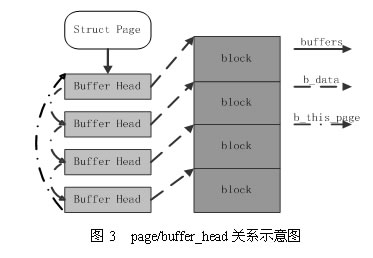
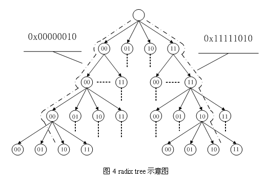
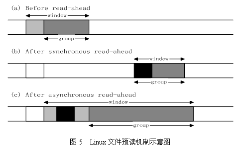
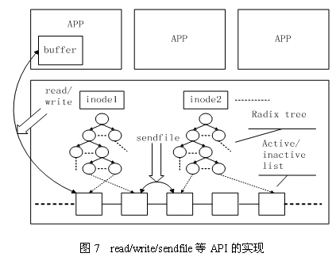

在 IBM Bluemix 云平台上开发并部署您的下一个应用。
1 前言
自从诞生以来，Linux 就被不断完善和普及，目前它已经成为主流通用操作系统之一，使用得非常广泛，它与 Windows、UNIX 一起占据了操作系统领域几乎所有的市场份额。特别是在高性能计算领域，Linux 已经成为一个占主导地位的操作系统，在2005年6月全球TOP500 计算机中，有 301 台部署的是 Linux 操作系统。因此，研究和使用 Linux 已经成为开发者的不可回避的问题了。
下面我们介绍一下 Linux 内核中文件 Cache 管理的机制。本文以 2.6 系列内核为基准，主要讲述工作原理、数据结构和算法，不涉及具体代码。
2 操作系统和文件 Cache 管理
操作系统是计算机上最重要的系统软件，它负责管理各种物理资源，并向应用程序提供各种抽象接口以便其使用这些物理资源。从应用程序的角度看，操作系统提供了一个统一的虚拟机，在该虚拟机中没有各种机器的具体细节，只有进程、文件、地址空间以及进程间通信等逻辑概念。这种抽象虚拟机使得应用程序的开发变得相对容易：开发者只需与虚拟机中的各种逻辑对象交互，而不需要了解各种机器的具体细节。此外，这些抽象的逻辑对象使得操作系统能够很容易隔离并保护各个应用程序。
对于存储设备上的数据，操作系统向应用程序提供的逻辑概念就是"文件"。应用程序要存储或访问数据时，只需读或者写"文件"的一维地址空间即可，而这个地址空间与存储设备上存储块之间的对应关系则由操作系统维护。
在 Linux 操作系统中，当应用程序需要读取文件中的数据时，操作系统先分配一些内存，将数据从存储设备读入到这些内存中，然后再将数据分发给应用程序；当需要往文件中写数据时，操作系统先分配内存接收用户数据，然后再将数据从内存写到磁盘上。文件 Cache 管理指的就是对这些由操作系统分配，并用来存储文件数据的内存的管理。 Cache 管理的优劣通过两个指标衡量：一是 Cache 命中率，Cache 命中时数据可以直接从内存中获取，不再需要访问低速外设，因而可以显著提高性能；二是有效 Cache 的比率，有效 Cache 是指真正会被访问到的 Cache 项，如果有效 Cache 的比率偏低，则相当部分磁盘带宽会被浪费到读取无用 Cache 上，而且无用 Cache 会间接导致系统内存紧张，最后可能会严重影响性能。
下面分别介绍文件 Cache 管理在 Linux 操作系统中的地位和作用、Linux 中文件 Cache相关的数据结构、Linux 中文件 Cache 的预读和替换、Linux 中文件 Cache 相关 API 及其实现。
2 文件 Cache 的地位和作用
文件 Cache 是文件数据在内存中的副本，因此文件 Cache 管理与内存管理系统和文件系统都相关：一方面文件 Cache 作为物理内存的一部分，需要参与物理内存的分配回收过程，另一方面文件 Cache 中的数据来源于存储设备上的文件，需要通过文件系统与存储设备进行读写交互。从操作系统的角度考虑，文件 Cache 可以看做是内存管理系统与文件系统之间的联系纽带。因此，文件 Cache 管理是操作系统的一个重要组成部分，它的性能直接影响着文件系统和内存管理系统的性能。
图1描述了 Linux 操作系统中文件 Cache 管理与内存管理以及文件系统的关系示意图。从图中可以看到，在 Linux 中，具体文件系统，如 ext2/ext3、jfs、ntfs 等，负责在文件 Cache和存储设备之间交换数据，位于具体文件系统之上的虚拟文件系统VFS负责在应用程序和文件 Cache 之间通过 read/write 等接口交换数据，而内存管理系统负责文件 Cache 的分配和回收，同时虚拟内存管理系统(VMM)则允许应用程序和文件 Cache 之间通过 memory map的方式交换数据。可见，在 Linux 系统中，文件 Cache 是内存管理系统、文件系统以及应用程序之间的一个联系枢纽。

3 文件 Cache 相关数据结构
在 Linux 的实现中，文件 Cache 分为两个层面，一是 Page Cache，另一个 Buffer Cache，每一个 Page Cache 包含若干 Buffer Cache。内存管理系统和 VFS 只与 Page Cache 交互，内存管理系统负责维护每项 Page Cache 的分配和回收，同时在使用 memory map 方式访问时负责建立映射；VFS 负责 Page Cache 与用户空间的数据交换。而具体文件系统则一般只与 Buffer Cache 交互，它们负责在外围存储设备和 Buffer Cache 之间交换数据。Page Cache、Buffer Cache、文件以及磁盘之间的关系如图 2 所示，Page 结构和 buffer_head 数据结构的关系如图 3 所示。在上述两个图中，假定了 Page 的大小是 4K，磁盘块的大小是 1K。本文所讲述的，主要是指对 Page Cache 的管理。
在 Linux 内核中，文件的每个数据块最多只能对应一个 Page Cache 项，它通过两个数据结构来管理这些 Cache 项，一个是 radix tree，另一个是双向链表。Radix tree 是一种搜索树，Linux 内核利用这个数据结构来通过文件内偏移快速定位 Cache 项，图 4 是 radix tree的一个示意图，该 radix tree 的分叉为4(22)，树高为4，用来快速定位8位文件内偏移。Linux(2.6.7) 内核中的分叉为 64(26)，树高为 6(64位系统)或者 11(32位系统)，用来快速定位 32 位或者 64 位偏移，radix tree 中的每一个叶子节点指向文件内相应偏移所对应的Cache项。
另一个数据结构是双向链表，Linux内核为每一片物理内存区域(zone)维护active_list和inactive_list两个双向链表，这两个list主要用来实现物理内存的回收。这两个链表上除了文件Cache之外，还包括其它匿名(Anonymous)内存，如进程堆栈等。



4 文件Cache的预读和替换
Linux内核中文件预读算法的具体过程是这样的：对于每个文件的第一个读请求，系统读入所请求的页面并读入紧随其后的少数几个页面(不少于一个页面，通常是三个页面)，这时的预读称为同步预读。对于第二次读请求，如果所读页面不在Cache中，即不在前次预读的group中，则表明文件访问不是顺序访问，系统继续采用同步预读；如果所读页面在Cache中，则表明前次预读命中，操作系统把预读group扩大一倍，并让底层文件系统读入group中剩下尚不在Cache中的文件数据块，这时的预读称为异步预读。无论第二次读请求是否命中，系统都要更新当前预读group的大小。此外，系统中定义了一个window，它包括前一次预读的group和本次预读的group。任何接下来的读请求都会处于两种情况之一：第一种情况是所请求的页面处于预读window中，这时继续进行异步预读并更新相应的window和group；第二种情况是所请求的页面处于预读window之外，这时系统就要进行同步预读并重置相应的window和group。图5是Linux内核预读机制的一个示意图，其中a是某次读操作之前的情况，b是读操作所请求页面不在window中的情况，而c是读操作所请求页面在window中的情况。
Linux内核中文件Cache替换的具体过程是这样的：刚刚分配的Cache项链入到inactive_list头部，并将其状态设置为active，当内存不够需要回收Cache时，系统首先从尾部开始反向扫描active_list并将状态不是referenced的项链入到inactive_list的头部，然后系统反向扫描inactive_list，如果所扫描的项的处于合适的状态就回收该项，直到回收了足够数目的Cache项。Cache替换算法如图6的算法描述伪码所示。

图6 Linux的Cache替换算法描述
Mark_Accessed(b) {
if b.state==(UNACTIVE && UNREFERENCE)
b.state = REFERENCE
else if b.state == (UNACTIVE && REFERENCE) {
b.state = (ACTIVE && UNREFERENCE)
Add X to tail of active_list
} else if b.state == (ACTIVE && UNREFERENCE)
b.state = (ACTIVE && REFERENCE)
}
Reclaim() {
if active_list not empty and scan_num<MAX_SCAN1
{
X = head of active_list
if (X.state & REFERENCE) == 0
Add X to tail of inactive_list
else {
X.state &= ~REFERENCE
Move X to tail of active_list
}
scan_num++
}
scan_num = 0
if inactive_list not emptry and scan_num <
MAX_SCAN2 {
X = head of inactive_list
if (X.state & REFERENCE) == 0
return X
else {
X.state = ACTIVE | UNREFERENCE
Move X to tail of active_list
}
scan_num++
}
return NULL
}
Access(b){
if b is not in cache {
if slot X free
put b into X
else {
X=Reclaim()
put b into X
}
Add X to tail of inactive_list
}
Mark_Accessed(X)
}5 文件Cache相关API及其实现
Linux内核中与文件Cache操作相关的API有很多，按其使用方式可以分成两类：一类是以拷贝方式操作的相关接口， 如read/write/sendfile等，其中sendfile在2.6系列的内核中已经不再支持；另一类是以地址映射方式操作的相关接口，如mmap等。
第一种类型的API在不同文件的Cache之间或者Cache与应用程序所提供的用户空间buffer之间拷贝数据，其实现原理如图7所示。

第二种类型的API将Cache项映射到用户空间，使得应用程序可以像使用内存指针一样访问文件，Memory map访问Cache的方式在内核中是采用请求页面机制实现的，其工作过程如图8所示。

首先，应用程序调用mmap（图中1），陷入到内核中后调用do_mmap_pgoff（图中2）。该函数从应用程序的地址空间中分配一段区域作为映射的内存地址，并使用一个VMA（vm_area_struct）结构代表该区域，之后就返回到应用程序（图中3）。当应用程序访问mmap所返回的地址指针时（图中4），由于虚实映射尚未建立，会触发缺页中断（图中5）。之后系统会调用缺页中断处理函数（图中6），在缺页中断处理函数中，内核通过相应区域的VMA结构判断出该区域属于文件映射，于是调用具体文件系统的接口读入相应的Page Cache项（图中7、8、9），并填写相应的虚实映射表。经过这些步骤之后，应用程序就可以正常访问相应的内存区域了。
6 小结
文件Cache管理是Linux操作系统的一个重要组成部分，同时也是研究领域一个很热门的研究方向。目前，Linux内核在这个方面的工作集中在开发更有效的Cache替换算法上，如LIRS(其变种ClockPro)、ARC等。相关信息可见http://linux-mm.org/AdvancedPageReplacement。
参考资料
- Understanding Linux Kernel Edition2
- Linux内核源代码情景分析
- http://www.top500.org
- R.W.Carr and J.L.Hennessy. WSCLOCK - a simple and effective algorithm for virtual mem-ory management. In Proc. ACM SOSP-08, Dec 1981.
- S. Jiang, F. Chen, and X. Zhang. CLOCK-Pro: An effective improvement of the CLOCK repla-cement. In Proc. USENIX ATC, Apr. 2005.
- S. Jiang and X. Zhang. LIRS: an efficient low in-terreference set replacement policy to improve buffer cache performance. In Proc. ACM SIG-METRICS, June 2002.
- N. Megiddo and D. S. Modha. ARC: A Self-tun-ing, Low Overhead Replacement Cache. In Proc. 2nd USENIX FAST, Mar 2003.
条评论


IBM Bluemix 资源中心
文章、教程、演示，帮助您构建、部署和管理云应用。

developerWorks 中文社区
立即加入来自 IBM 的专业 IT 社交网络。

Bluemixathon 挑战赛
为灾难恢复构建应用，赢取现金大奖。
请 登录 或 注册 后发表评论。
注意：评论中不支持 HTML 语法